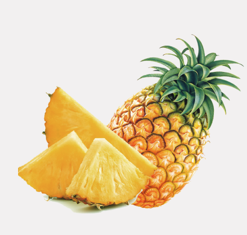
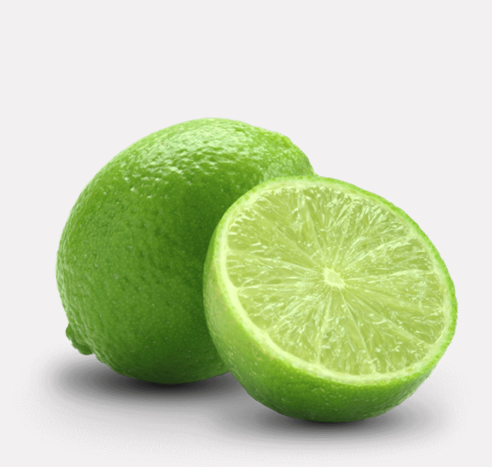
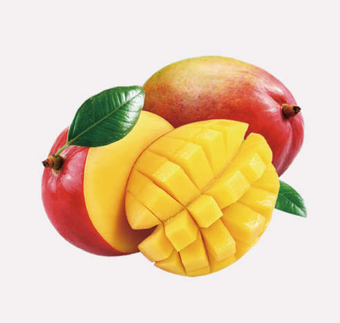
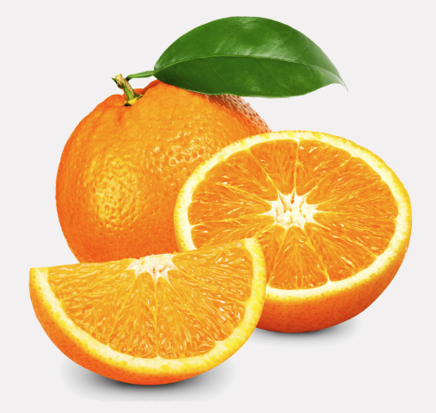

Piñas


EL SABOR DEL CAMPO Y LA
FRESCURA QUE TU FAMILIA NECESITA
Las frutas y verduras que brindamos en nuestra central mayorista se caracterizan por su frescura, calidad y origen natural.
Trabajamos por ofrecer producos seleccionados cuidadosamente sin quimicos durante su cosecha.
Queremos que cada alimento que llegue a tu mesa conserve su sabor, frescura y calidad.




Brindar productos agricolas frescos, saludables y de excelente calidad, conectando a nuestros
clientes con el campo a traves de un servicio confiable, precios justos y un compromiso constante con
la satisfaccion y el bienestar de las familias.
Ser una empresa reconocida por ofrecer los mejores productos agricolas, destacandonos por
nuestra calidad, innovacion y excelente atencion al cliente, promoviendo el desarrollo del
campo y una alimentacion saludable en nuestra comunidad.